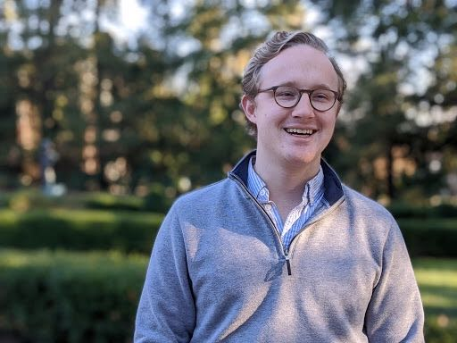

Hi there!
Photo courtesy of Truong Nam Nguyen Huy
I am currently a pre-doctoral research fellow with Princeton's Program in Public Economics; I work primarily with Dr. Owen Zidar. I am a budding applied microeconomist with interests in vulnerable populations and inequality. I graduated from Harvard College in May 2019 with a bachelor's degree in applied mathematics magna cum laude and hope to earn a doctorate in economics.
I grew up in Richmond, Indiana, a small Rust Belt city located five minutes from the Ohio border. My time in Richmond kindled my interests in inequality and opportunity.
When I'm not thinking about economics (and sometimes when I am), I moonlight as an amateur chorister (baritone). I currently sing with the Princeton Chamber Choir, and sang with the mixed-voices chorus affiliated with the Harvard Music Department, namely, the Harvard-Radcliffe Collegium Musicum, for four years.
For more of my commentary, you can follow me on Twitter, where my handle is @DustinSwonder.